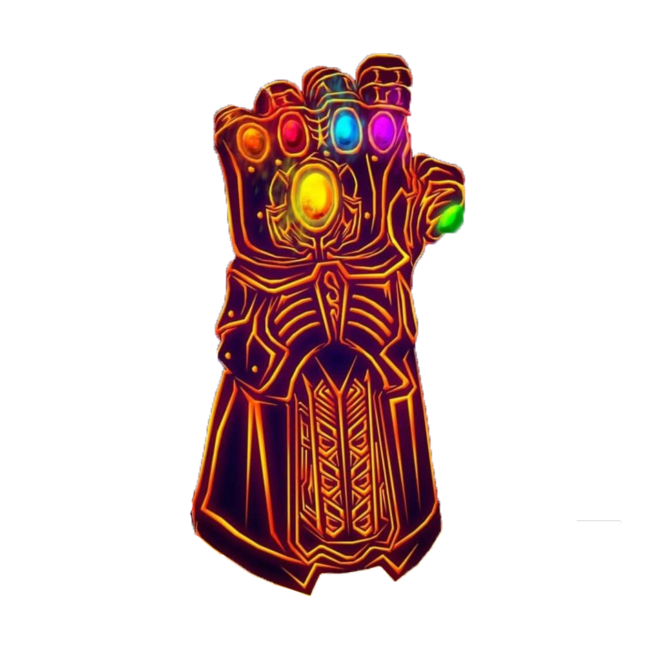

<div>
  <mat-card class="navbar">
    <button mat-raised-button routerLink="/" title="Home"><i class="fas fa-home"></i></button>
    <button mat-raised-button routerLink="/poi" title="Search"><i class="fas fa-search"></i></button>
    <button mat-raised-button routerLink="/login" *ngIf='!token' title="Login" ><i class="fas fa-sign-in-alt"></i></button>
    <button mat-raised-button routerLink='/account' *ngIf='token' title="Account Page"><i class="fas fa-user-alt"></i></button>
    <button mat-raised-button routerLink='/admin' *ngIf='admin()'></button>
    <button mat-raised-button (click)='logout()' *ngIf='token' title="Logout" ><i class="fas fa-power-off"></i></button>
  </mat-card>
</div>
<router-outlet></router-outlet>